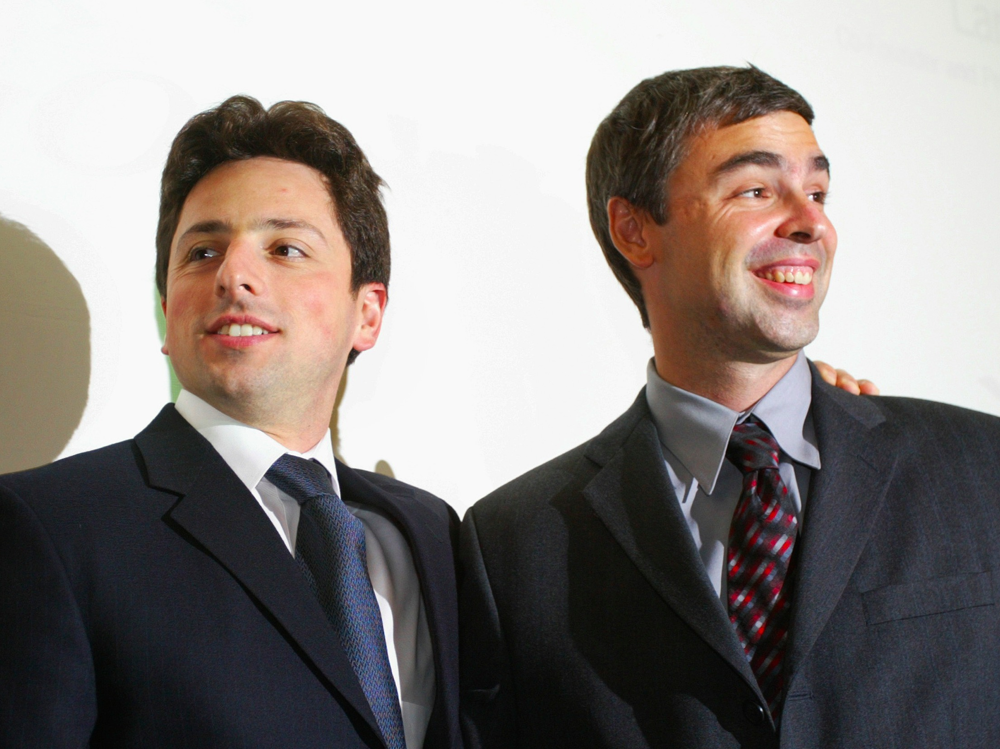
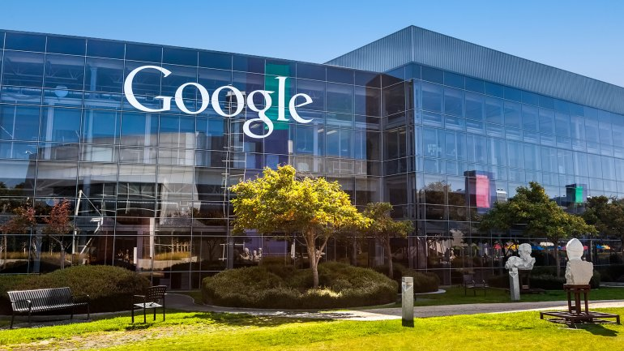

Lawrence Edward "Larry" Page (East Lansing, Míchigan, 26 de marzo de 1973) es un empresario estadounidense. Page es el creador (junto con Serguéi Brin) de Google, anteriormente llamada BackRub. Es, además, uno de los hombres más ricos del mundo; se estima que tiene un patrimonio neto de 40.7 mil millones de dólares (2017).3 Actualmente se desempeña como CEO de la compañía Alphabet, una giga empresa que engloba a Google y otras empresas de su ámbito.
Page nació en East Lansing, Míchigan, Estados Unidos, el 26 de marzo de 1973. Es hijo de dos docentes universitarios, Gloria Page, profesora de programación en la Universidad de Míchigan y Carl V. Page, profesor de Ciencias de la Computación e Inteligencia Artificial de la Universidad de Carolina del Norte en Chapel Hill y de la Universidad de Míchigan, un pionero y autoridad en el campo de la Inteligencia Artificial, prematuramente fallecido en 1996.4 Desde los dos años de edad asistió en Lansing a una escuela del método Montessori. La pasión de Page por los ordenadores y la informática empezó a los seis años, y su interés por la tecnología y los inventos a los doce. Su ídolo juvenil fue Nikola Tesla.5 Siguiendo los pasos de sus padres, y bajo su orientación, cursó estudios en la East Lansing High School y se graduó con honores en la Universidad Estatal de Míchigan, obteniendo un grado en Ingeniería de Computadores (Computer Engineering). Se doctoró en Ciencias de la computación en la Universidad de Stanford. El Instituto de Empresa lo premió con un máster honorífico en Administración de Empresas y fue el primero en recibir el premio Alumni society recent engineering graduate de la Universidad de Míchigan.
Serguéi Mijáilovich Brin (en ruso: Серге́й Миха́йлович Брин, 21 de agosto de 1973, Moscú, Unión Soviética) es un científico de la computación y empresario de Internet estadounidense de origen ruso que, junto a Larry Page, fundó Google, una de las más rentables, grandes y célebres compañías de Internet. En conjunto, Brin y Page aún mantienen el control de un 16% de la compañía. Es a su vez una de las personas más ricas del mundo, con una fortuna personal estimada en 44 800 millones de dólares (Junio 2017).
Brin emigró a Estados Unidos con su familia desde la Unión Soviética cuando contaba con apenas seis años de edad.4 Se licenció por la Universidad de Maryland, siguiendo los pasos de su abuelo y de su padre en el estudio de las matemáticas y las ciencias de la computación. Después de su graduación se trasladó a la Universidad de Stanford para doctorarse en ciencias de la computación gracias a una beca. Allí conoció a Larry Page, con quien más tarde entablaría amistad. En una habitación compartida desarrollaron gracias a la minería de datos un motor de búsqueda. El buscador se hizo popular en Stanford y suspendieron sus estudios para poner en marcha el futuro buscador de Google en un garaje alquilado. La empresa en pocos años tuvo un gran éxito a nivel mundial.
Brin está interesado en otras áreas y financia diversos proyectos de investigación y filantropía. The Economist lo describió como un «Hombre Ilustrado» y como alguien que pensaba que el conocimiento siempre es bueno, y sin duda siempre mejor que la ignorancia,5 una filosofía que puede aplicarse a la «misión» de Google de «organizar la información de todo el mundo y hacerla universal y útil para todo»;6 así, el lema no oficial que Google tiene es: no seas malvado.
Nacido el 21 de agosto de 1973 en Moscú, Unión Soviética (actual Rusia), es hijo de la investigadora del Goddard Space Flight Center de la NASA, Eugenia Brin y del profesor de Matemáticas en la Universidad de Maryland, Michael Brin. Emigró a Estados Unidos cuando tenía sólo 6 años. Estudió en la Paint Branch Montessori School (Adelphi, Maryland). Su padre alentó su interés por las matemáticas, para las que siempre tuvo disposición. Después del instituto, se matriculó en la Universidad de Maryland para estudiar Ciencias Matemáticas y Ciencias de la Computación. Recibió su graduado con honores en mayo de 1993 y comenzó sus estudios de postgrado en la Universidad de Stanford, gracias a una beca de la National Science Foundation. Ese mismo año, además, comenzó a trabajar en Wolfram Research, la empresa creadora de Mathematica.
En mayo de 2007, Brin se casó con Anne Wojcicki en las Bahamas. Wojcicki es una biotecnóloga graduada en la universidad de Yale en 1996, con una licenciatura en biología. Ella ha tenido un interés activo en la información sobre la salud, y junto a Brin, ha estado desarrollando nuevas formas de mejorar el acceso a ésta. Como parte de sus esfuerzos, han tenido conversaciones con investigadores líderes en el proyecto del genoma humano. Brin instintivamente se refiere a la genética como una base de datos y un problema computacional. Es así como su esposa se convierte en co-fundadora de la empresa 23andMe, que permite a la gente analizar y comparar su propio mapa genético (consistente en 23 pares de cromosomas). En un reciente anuncio en la conferencia de Google Zeitgeist, Brin ha dicho que espera que algún día podamos aprender de nuestro código genético, así como ayudar a los doctores, pacientes e investigadores a analizar la información y de esa manera intentar reparar los errores de éste. La madre de Brin, Eugenia ha sido diagnosticada del mal de Parkinson. En 2008, él decidió hacer una donación a la Escuela de Medicina de la Universidad de Maryland, donde su madre ha estado siendo tratada. Brin ha usado los servicios de 23andMe y ha descubierto que a pesar de todo, el Parkinson generalmente no es hereditario. En un editorial del The Economist se le pregunta si la felicidad no es la ignorancia acerca de estos temas, él responde que no, porque ahora puede tomar medidas para prevenir esta enfermedad. Actualmente Brin y su esposa dirigen la organización sin fines de lucro: The Brin Wojcicki Foundation.

Durante su doctorado en Stanford conoció a Serguéi Brin. Juntos desarrollaron y pusieron en marcha el buscador Google, que empezó a funcionar en 1998. Google está basado en la tecnología patentada PageRank. Se dice que le pusieron este nombre al buscador por su semejanza con la palabra googol o gúgol (nombre de un número extremadamente grande, 10 elevado a la 100, o 10100). El primer artículo que publico fue aceptado por el periodico científico de ambos sobre Google, "The Anatomy of a Large-Scale Hypertextual Web Search Engine" (1998),6 figuró pronto entre los diez artículos más citados de todos los tiempos.7 Page fue presidente de Google junto con Serguéi Brin hasta 2001, año en que decidieron contratar a Eric Schmidt. Page dirige Google junto a Serguéi Brin y Schmidt. A fecha 4 de abril de 2011 Eric Schmidt cesa su actividad como CEO de Google para dar paso a Larry Page.
Brin conoció a Larry Page durante unas jornadas de orientación para nuevos estudiantes en la Universidad de Stanford. Aunque inicialmente chocaron, no tardaron en conectar y comenzaron a compartir ideas. Les unía especialmente su interés matemático por la World Wide Web. Fruto de esta unión nacería en 1996 BackRub, el buscador predecesor de Google. El proyecto creció rápidamente y se dieron cuenta de que habían creado un magnífico motor de búsqueda, que aplicaron a la web con excelentes resultados. Optaron por dejar sus estudios en la Universidad y dedicarse por completo al buscador, solicitando ayudas económicas a profesores, familia y amigos. Compraron servidores y alquilaron un garaje en Menlo Park. La historia de Google Inc. había comenzado. El 10 de agosto fue escogido como nuevo Presidente de Alphabet Inc. fundada ese mismo día, después de la reorganización de Google de donde estaba a cargo de Google X

Page ha dado conferencias en diversos foros internacionales, como el Foro Económico Mundial, la Conferencia de Tecnología, Entretenimiento y Diseño, la Cumbre sobre Tecnología del The Wall Street Journal, o el Club Commonwealth. Fue nombrado World Economic Forum Global Leader for Tomorrow (Líder Global para el Futuro del Foro Económico Mundial) en 2002, así como Young Innovator Who Will Create the Future (Joven Innovador Que Creará el Futuro) por la revista Technology Review del MIT. Miembro del National Advisory Committee (NAC) de la Facultad de Ingeniería de la Universidad de Míchigan, fue nombrado Innovator of the Year (Innovador del Año) por la revista Research and Development y fue elegido miembro de la Academia Nacional de Ingeniería en 2004.
En 2004, junto con Brin, recibió el Premio Marconi, y el 24 de octubre de 2008, en nombre de Google, el Premio Príncipe de Asturias de Comunicación y Humanidades. Su hermano mayor, Carl Victor Jr., fue cofundador de eGroups, más tarde vendido a Yahoo.8
Brin está involucrado en otros proyectos más personales fuera del ámbito de Google. Así, junto a Larry Page, busca la manera de resolver el problema de la energía mundial y los peligros medioambientales a través del área filantrópica de Google llamada Google.org, que invierte en la industria de la energía para encontrar nuevas fuentes renovables. La compañía reconoce que sus fundadores quieren "resolver los grandes problemas de la humanidad utilizando la tecnología"
El 8 de diciembre de 2007, en la hawaiana isla Necker, Larry Page se casó con Lucinda (Lucy) Southworth, licenciada en ciencias biomédicas de las universidades de Pensilvania y Oxford.
Para Volver a la pagina principal pincha aqui